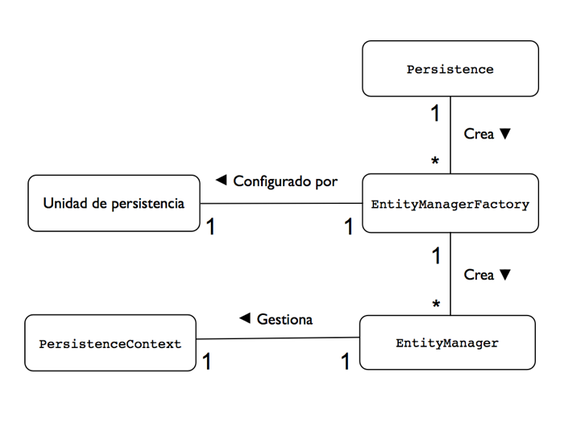

Conceptos básicos de JPA
Entidades
Como hemos visto en la sesión anterior, una entidad es esencialmente un nombre, o un conjunto de estados (atributos) asociados juntos en una unidad. Puede participar en relaciones con otras entidades, en las que una entidad puede estar relacionada con una o muchas instancias de otra entidad.
Las entidades integran las ventajas de la Programación Orientada a Objetos y de las bases de datos. La característica más importante de una entidad es su persistencia. ¿Qué otras características podemos destacar en las entidades?
Persistencia
La primera y más importante característica de las entidades es que son persistentes. Esto quiere decir que su estado puede volcarse un almacén de datos y que puede ser consultado con posterioridad, quizás justo después del proceso que ha creado la entidad.
Podríamos llamarlas objetos persistentes, y mucha gente lo hace, pero no es técnicamente correcto. Hablando estrictamente, un objeto persistente se vuelve persistente en el momento en que se instancia. Si existe un objeto persistente, entonces por definición ya es persistente. Una entidad, sin embargo, es persistente porque puede guardarse en un almacén persistente. La diferencia es que no se hace persistente automáticamente, sino que debemos invocar a algún método del API para iniciar el proceso. Esto representa una distinción importante, ya que deja el control sobre la persistencia en manos de la aplicación. De esta forma se ofrece a la aplicación la flexibilidad de manipular los datos, realizar lógica de negocio sobre la entidad y decidir cuándo es el momento correcto de efectuar la persistencia. O sea, que las entidades pueden manipularse sin tener necesariamente repercusiones persistentes.
Identidad
Como cualquier objeto Java, una entidad tiene una identidad que lo distingue de otros objetos, pero cuando existen en el almacén de datos también tiene una identidad persistente. La identidad persistente, definida por el identificador (id) de la entidad, es la clave única que identifica a un instancia entidad y la diferencia de otras instancias del mismo tipo de entidad.
Una entidad tiene una identidad persistente cuando existe una representación de ella en el almacén de datos, esto es, una fila en una tabla de una base de datos. Si no está en la base de datos, entonces incluso aunque en memoria tenga su campo identidad definido, no tienen una identidad persistente. El identificador de la entidad es, por tanto, equivalente a la clave primaria de la tabla de la base de datos en la que se almacena la entidad.
Transaccionalidad
Las entidades son transaccionales. Normalmente se crean, actualizan y borran dentro de una transacción, y se requiere una transacción para que los cambios se actualicen (commit) en la base de datos. Los cambios realizados en la base de datos o bien fallan o bien tienen éxito de forma atómica.
En memoria, sin embargo, la historia es diferente. Las entidades pueden cambiarse sin que los cambios sean ni siquiera hechos persistentes. Incluso cuando está incluida en una transacción una entidad puede quedar en un estado inconsistente si se produce un rollback o falla la transacción. Las entidades en memoria son simples objetos Java que obedecen todas las reglas y restricciones que la máquina virtual Java aplica a todos los objetos.
Granularidad
También podemos aprender cosas sobre las entidades describiendo lo que no son. No son objetos primitivos, ni wrappers. Un string, por ejemplo, no puede ser una entidad. Su granularidad es demasiado fina para ser parte de un dominio dado. Sin embargo, un string será parte normalmente de una entidad en forma del tipo de datos de alguno de sus atributos.
Las entidades son objetos de grano fino que tienen un conjunto de atributos que normalmente se almacenan en un único lugar, como una fila de una tabla. ¿Cuál es la dimensión correcta de una entidad? Varía según la aplicación, pero definitivamente no es correcto ni hacer una entidad de 100 columnas, ni una entidad de una única columna. En general, lo más habitual es utilizar entidades más bien pequeñas, en forma de objetos ligeros, relacionados unos con otros, que pueden ser gestionados eficientemente por la aplicación.
Metadatos
Los metadatos de la entidad son características asociadas a la entidad necesarias para su configuración. Son usados por JPA para reconocer, interpretar y gestionar correctamente la entidad desde el momento en que se carga hasta el momento de invocación en tiempo de ejecución.
Deben ser unos datos mínimos, pero la forma de definirlos debe ser flexible para poder configurar opciones avanzadas. En JPA existen dos posibles formas de definir los metadatos: anotaciones y XML. Hasta la llegada de JPA, cuando la herramienta de persistencia más común era Hibernate, los ficheros XML eran la forma más habitual de configurar los metadatos de las entidades. En JPA se ha hecho un gran esfuerzo en simplificar la configuración de las entidades y se ha dado gran importancia a las anotaciones (aunque se sigue manteniendo la posibilidad de utilizar ficheros XML).
Las anotaciones se introdujeron en Java SE 5 y se han convertido en una parte fundamental de la especificación Java EE, en la que se utilizan para especificar los metadatos de las entidades JPA y de los Enterprise JavaBeans. Las anotaciones son sentencias con parámetros opcionales que se colocan justo antes de elementos de programación Java como clases, métodos, campos y variables. A continuación mostramos un ejemplo sencillo con bastantes anotaciones JPA, en el que se define una entidad con un identificador autogenerado y con un atributo asociado a una columna específica de la base de datos.
@Entity
public class Empleado {
@Id @GeneratedValue
private int id;
@Column(name="E_NOMBRE")
private String nombre;
}
El compilador Java procesa las anotaciones, y las añade a los ficheros de clases o las elimina, dependiendo del tipo de anotación. Cuando se mantienen en el fichero de clases, pueden consultarse en tiempo de ejecución mediante un API basada en la reflexión.
Junto al uso de anotaciones, otro principio determinante de la simplicidad de JPA es la idea de configurar excepcionalmente (configuration by exception en inglés). Esto significa que el motor de persistencia de JPA define opciones por defecto que funcionan correctamente en la mayoría de las ocasiones, y que los usuarios necesitan realizar una configuración explícita sólo cuando necesiten modificar el valor por defecto. En otras palabras, el que el usuario deba proporcionar valores de configuración debe ser la excepción, no la regla.
El uso extendido de los valores por defecto tiene, sin embargo, un coste. Cuando los valores por defecto se incluyen en el API y no tienen que ser especificados, tampoco son visibles ni evidentes a los usuarios. Éstos pueden olvidar que están ahí y que el buen funcionamiento de la aplicación se debe a ellos, haciendo algo más complicado realizar una depuración o modificar el comportamiento de la aplicación cuando sea necesario.
Los valores por defecto no deberían, por tanto, servir para hacer olvidar a los usuarios las complejidades del desarrollo de aplicaciones con entidades persistentes. Deberían servir para permitir al desarrollador comenzar fácil y rápidamente con algo que funcione y para después poder ir modificándolo iterativamente conforme el proyecto lo requiere.
Definición de una Entidad
Vimos en la sesión anterior varios ejemplos de entidades. Vamos a detallar algo su construcción.
Vamos a comenzar con una sencilla clase Java con un constructor sin argumentos. Por ejemplo, una clase normal Java que define un empleado:
public class Empleado {
private int id;
private String nombre;
private long salario;
public Empleado() {}
public Empleado(int id) { this.id = id; }
public int getId() { return id; }
public void setId(int id) { this.id = id; }
public String getNombre() { return nombre; }
public void setNombre(String nombre) { this.nombre = nombre; }
public long getSalario() { return salario; }
public void setSalario(long salario) { this.salario = salario; }
}
Como ya habrás notado, estamos definiendo una clase al estilo JavaBean con tres propieades: id, nombre y salario. Cada una de estas propiedades se representan por un par de métodos de acceso para obtener y definir la propiedad y está respaldada por una variable de instancia privada en la clase. Estas propiedades o atributos son las unidades de estado dentro de la entidad que deseamos hacer persistentes en el almacén de datos.
Para convertir Empleado en una entidad debemos comenzar por anotar la clase con @Entity. Este marcador indica al motor de persistencia que la clase es una entidad.
La segunda anotación que debemos añadir es @Id. Esta anotación define que una propiedad o atributo particular es la que va a contener la identidad persistente de la entidad (la clave primaria) y es necesaria para que motor conozca qué campo usar como clave primaria en la tabla. Esta anotación debe colocarse o bien antes de la definición del campo o en el método de acceso. Normalmente utilizaremos la primera forma. De esta forma, la entidad que definida como sigue:
@Entity
public class Empleado {
@Id
private int id;
private String nombre;
private long salario;
...
}
Los campos de la entidad son hechos persistentes automáticamente utilizando el principio comentado de usar valores por defecto. ¿Cuáles son estos valores por defecto?.
Para contestar a la pregunta debemos profundizar en la anotación @Entity. Allí nos encontramos un elemento llamado name que identifica de forma única el tipo de la entidad. Este elemento puede ser definido explícitamente por el programador, como @Entity(name="Emp"). El valor por defecto de este elemento es el propio nombre de la entidad (Empleado, en este caso). Este valor será utilizado para dar nombre a la tabla en la que se almacenarán los datos de las entidades.
Cada uno de los atributos de la entidad define una columna de la tabla. El nombre de la columna será por defecto el del propio campo. Es posible cambiar este nombre utilizando el elemento name de la anotación.
La posibilidad de especificar los nombres de las tablas y de las columnas de la base de datos resultante del mapeado ORM hace posible reutilizar bases de datos ya existentes y adaptarlas a JPA.
Entity Manager
Hemos comentado que es necesario invocar un API para hacer persistentes las entidades en la base de datos. De hecho, son necesarias llamadas a este API para realizar la mayor parte de operaciones sobre las entidades. Este API está implementado por el gestor de entidades (EntityManager en inglés) y está especificado en una única interfaz llamada EntityManager (enlace a javadoc).
Cuando un EntityManager obtiene una referencia a una entidad, se dice que la entidad está gestionada (una managed entity en inglés) por el EntityManager. Al conjunto de entidades gestionadas por un EntityManager se le denomina su contexto de persistencia (persistence context en inglés). Los entity managers trabajan con la base de datos mediante un proveedor de persistencia (persistence provider en inglés). El proveedor es el que proporciona al EntityManager compatibilidad con el tipo de base de datos con la que trabaja a través de la implementación de la interfaz Query y de la generación de SQL.
Los entity managers se obtienen a través de factorías del tipo EntityManagerFactory. El EntityManager se configura mediante la especificación de una unidad de persistencia (persistence unit en inglés) definida en un fichero de propiedades (XML normalmente) cuyo nombre se pasa a la factoría. La unidad de persistencia define las características concretas de la base de datos con la que van a trabajar todos los gestores de persistencia obtenidos a partir de esa factoría y queda asociada a ella en el momento de su creación. Existe, por tanto, una relación uno-a-uno entre una unidad de persistencia y su EntityManagerFactory concreto.
Por último, para obtener una factoría EntityManagerFactory debemos llamar a un método estático de la clase Persistence .
Las relaciones entre las clases que intervienen en la configuración y en la creación de entity managers se muestran en la siguiente figura.

Obtención de un EntityManager
Un EntityManager siempre se obtiene a partir de un EntityManagerFactory. La forma de obtener la factoría varía dependiendo de si estamos utilizando JPA gestionado por la aplicación (cuando utilizamos JPA en Java SE) o si estamos utilizando un contenedor de persistencia (proporcionado por un servidor de aplicaciones). En el segundo caso se utiliza un método denominado inyección de dependencias que analizaremos en detalle en el módulo del Especialista en el que hablemos de la arquitectura EJB. En el primer caso, el que vamos a utilizar durante todo este módulo, debemos usar el método estático createEntityMaagerFactory() de la clase Persistence. En este método se debe proporcionar el nombre de la unidad de persistencia que vamos a asociar a la factoría. Por ejemplo, para obtener un EntityManagerFactory asociado a la unidad de persistencia llamada "SimpleJPA" hay que escribir lo siguiente:
EntityManagerFactory emf =
Persistence.createEntityManagerFactory("SimpleJPA");
El nombre "SimpleJPA" indica el nombre de la unidad de persistencia en la que se especifican los parámetros de configuración de la conexión con la base de datos (URL de la conexión, nombre de la base de datos, usuario, contraseña, gestor de base de datos, características del pool de conexiones, etc.). Esta unidad de persistencia se especifica en el fichero estándar de JPA META-INF/persistence.xml.
Una vez que tenemos una factoría, podemos obtener fácilmente un EntityManager:
EntityManager em = emf.createEntityManager();
Normalmente esta llamada no es demasiado costosa, ya que las implementaciones de JPA (como Hibernate) implementan pools de entity managers.
Haciendo persistente una entidad
Hacer persistente una entidad consiste en tomar una entidad transitoria, que no tiene representación persistente en la base de datos, y almacenar su estado de forma que podamos recuperarlo más tarde. Ésta es la base de la persistencia; crear un estado que pueda sobrevivir al proceso que lo creó. Veamos cómo hacerlo de forma sencilla:
Empleado emp = new Empleado(146); em.persist(emp);
El método persist es el que se encarga de comenzar a hacer persistente la entidad. Veremos más adelante que la entidad se vuelca realmente a la base de datos cuando se realiza un flush del contexto de persistencia y se generan las instrucciones SQL que se ejecutan en la base de datos (normalmente al hacer un commit de la transacción actual). Si el EntityManager encuentra algún problema al ejecutar el método, se lanza la excepción no chequeada PersistenceException. Cuando termine la ejecución del método, si no se ha producido ninguna excepción, emp será a partir de ese momento una entidad gestionada dentro del contexto de persistencia del EntityManager. El siguiente código muestra como definir un sencillo método que crea un nuevo empleado y lo hace persistente en la base de datos:
public Empleado createEmpleado(int id, String nombre, long salario) {
Empleado emp = new Empleado(id);
emp.setNombre(nombre);
emp.setSalario(salario);
em.persist(emp);
return emp;
}
El método asume la existencia de un EntityManager en la variable de instancia em y lo usa para hacer persistente el empleado recién creado. La llamada a persist() podría generar una excepción de tiempo de ejecución de tipo PersistenceException que se propagaría al llamador del método.
Búsqueda de entidades
Una vez que la entidad está en la base de datos, lo siguiente que podemos hacer es encontrarla de nuevo. Para ello basta con escribir una línea de código:
Empeado emp = em.find(Empleado.class, 146);
Pasamos la clase de la entidad que estamos buscando (en el ejemplo estamos buscando una instancia de la clase Empleado) y el identificador o clave primaria que identifica la entidad. El entity manager buscará esa entidad en la base de datos y devolverá la instancia buscada. La entidad devuelta será una entidad gestionada que existirá en el contexto de persistencia actual asociado al entity manager.
En el caso en que no existiera ninguna entidad con ese identificador, se devolvería simplemente null.
La llamada a find puede devolver dos posibles excepciones de tiempo de ejecución, ambas de la clase PersistenceException: IllegalStateException si el entitiy manager ha sido previamente cerrado o IllegalArgumentException si el primer argumento no contiene una clase entidad o el segundo no es el tipo correcto de la clave primaria de la entidad.
El método para buscar entidades de tipo empleado sería tan sencillo como sigue:
public Empleado findEmpleado(int id) {
return em.find(Employee.class, id);
}
Borrado de entidades
Un borrado de una entidad realiza una sentencia DELETE en la base de datos. Esta acción no es demasiado frecuente, ya que las aplicaciones de gestión normalmente conservan todos los datos obtenidos y marcan como no activos aquellos que quieren dejar fuera de vista de los casos de uso. Se suele utilizar para eliminar datos que se han introducido por error en la base de datos o para trasladar de una tabla a otra los datos (se borra el dato de una y se inserta en la otra). En el caso de entidades esto último sería equivalente a un cambio de tipo de una entidad.
Para eliminar una entidad, la entidad debe estar gestionada, esto es, debe existir en el contexto de persistencia. Esto significa que la aplicación debe obtener la entidad antes de eliminarla. Un ejemplo sencillo es:
Empleado emp = em.find(Empleado.class, 146); em.remove(emp);
Un posible problema del código anterior es que podría darse el caso de que la llamada a find() no encontrara la entidad, lo que causaría una excepción en la llamada a remove(). Podemos incluir un chequeo de que la entidad no es null en nuestro método para borrar un empleado:
public void removeEmpleado(int id) {
Empleado emp = em.find(Empleado.class, id);
if (emp != null) {
em.remove(emp);
}
}
Actualización de entidades
Una entidad puede ser actualizada en unas pocas formas diferentes, pero veremos ahora el caso más común y sencillo. Es el caso en el que tenemos una entidad gestionada y queremos hacer cambios en ella. Para actualizar una entidad, primero debemos obtenerla para convertirla en gestionada. Después podremos colocar los nuevos valores en sus atributos utilizando los métodos set de la entidad. Por ejemplo, supongamos que queremos subir el sueldo del empleado 146 en 1.000 euros. Tendríamos que hacer lo siguiente:
Empleado emp = em.find(Empleado.class, 146); emp.setSueldo(emp.getSueldo() + 1000);
Nótese la diferencia con las operaciones anteriores, en las que el EntityManager era el responsable de realizar la operación directamente. Aquí no llamamos al EntityManager sino a la propia entidad. Estamos, por así decirlo, trabajando con una caché de los datos de la base de datos. Posteriormente, cuando se finalice la transacción, el EntityManager hará persistentes los cambios mediante las correspondientes sentencias SQL.
Podemos definir un método que aumente el sueldo de un empleado en una determinada cantidad:
public Empleado subeSueldoEmpleado(int id, long aumento) {
Empleado emp = em.find(Empleado.class, id);
if (emp != null) {
emp.setSueldo(emp.getSueldo + aumento);
}
}
La otra forma de actualizar una entidad es con el método merge() del EntityManager. A este método se le pasa como parámetro una entidad no gestionada. El EntityManager busca la entidad en su contexto de persistencia (utilizando su identificador) y actualiza los valores del contexto de persistencia con los de la entidad no gestionada. En el caso en que la entidad no existiera en el contexto de persistencia, se crea con los valores que lleva la entidad no gestionada.
Veamos el siguiente código para aclararlo un poco.
em.getTransaction().begin();
Empleado emp1 = new Empleado();
emp1.setId(200);
emp1.setNombre("Juan");
em.persist(emp1);
Empleado emp2 = new Empleado();
emp2.setId(200);
emp2.setNombre("Luisa");
em.merge(emp2);
em.getTransaction().commit();
En el código creamos un empleado con el nombre "Juan" y lo hacemos persistente, con lo que la entidad se incorpora al contexto de persistencia. Después creamos otro empleado con el nombre "Luisa" y el mismo identificador. Al no hacerlo persistente, se trata de una entidad no gestionada (si hubiéramos llamado a persist() hubiéramos tenido un error porque ya hay una entidad con ese identificador). Cuando llamamos al método merge(), la entidad en el contexto de persistencia (referenciada por la variable emp1) es actualizada con los valores de la entidad emp2 (se actualiza su nombre a "Luisa"). Por último, al grabar la transacción los datos que se hacen persistentes en la base de datos son los últimos actualizados.
Transacciones
Cualquier operación que conlleve una creación, modificación o borrado de entidades debe hacerse dentro de una transacción. En JPA las transacciones se gestionan de forma distinta dependiendo de si estamos en un entorno Java SE o en un entorno Java EE. La diferencia fundamental entre ambos casos es que en un entorno Java EE las transacciones se manejan con JTA (Java Transaction API), un API que implementa el two face commit y que permite gestionar operaciones sobre múltiples recursos transaccionales o múltiples operaciones transaccionales sobre el mismo recurso. En el caso de Java SE las transacciones se implementan con el gestor de transacciones propio del recurso local (la base de datos) y se especifican en la interfaz EntityTransaction.
El gestor de transacciones locales se obtiene con la llamada getTransaction() al EntityManager. Una vez obtenido, podemos pedirle cualquiera de los métodos definidos en la interfaz: begin() para comenzar la transacción, commit() para actualizar los cambios en la base de datos (en ese momento JPA vuelca las sentencias SQL en la base de datos) o rollback() para deshacer la transacción actual.
El siguiente listado muestra un ejemplo de uso de transacciones con los métodos que estamos definiendo:
em.getTransaction().begin(); createEmpleado(146, "Juan Garcia", 30000); em.getTransaction().commit();
En los métodos que hemos ido construyendo se asume que la gestión de las transacciones se va a realizar fuera de ellos, que se ejecutan en una transacción ya comenzada y que la aplicación se encargará de hacer el commit de la transacción. Esto nos permite mayor flexibilidad en el uso de los métodos, ya que podremos encadenar más de uno de estos métodos en una única transacción.
Queries
Uno de los aspectos fundamentales de JPA es la posibilidad de realizar consultas sobre las entidades, muy similares a las consultas SQL. El lenguaje en el que se realizan las consultas se denomina Java Persistence Query Language (JPQL).
Una consulta se implementa mediante un objeto Query. Los objetos Query se construyen utilizando el EntityManager como una factoría. La interfaz EntityManager proporciona un conjunto de métodos que devuelven un objeto Query nuevo. Veremos algún ejemplo ahora, pero profundizaremos en el tema más adelante.
Una consulta puede ser estática o dinámica. Las consultas estáticas se definen con metadatos en forma de anotaciones o XML, y deben incluir la consulta propiamente dicha y un nombre asignado por el usuario. Este tipo de consulta se denomina una consulta con nombre (named query en inglés). El nombre se utiliza en tiempo de ejecución para recuperar la consulta.
Una consulta dinámica puede lanzarse en tiempo de ejecución y no es necesario darle un nombre, sino especificar únicamente las condiciones. Son un poco más costosas de ejecutar, porque el proveedor de persistencia (el gestor de base de datos) no puede realizar ninguna preparación, pero son muy útiles y versátiles porque pueden construirse en función de la lógica del programa, o incluso de los datos proporcionados por el usuario.
El siguiente código muestra un ejemplo de consulta dinámica:
Query query = em.createQuery("SELECT e FROM Empleado e " +
"WHERE e.sueldo > :sueldo");
query.setParameter("sueldo", 20000);
List emps = query.getResultList();
En el ejemplo vemos que, al igual que en JDBC, es posible especificar consultas con parámetros y posteriormente especificar esos parámetros con el método setParameter(). Una vez definida la consulta, el método getResultList() devuelve la lista de entidades que cumplen la condición. Este método devuelve un objeto que implementa la interfaz List, una subinterfaz de Collection que soporta ordenación. Hay que notar que no se devuelve una List<Empleado> ya que no se pasa ninguna clase en la llamada y no es posible parametrizar el tipo devuelto. Sí que podemos hacer un casting en los valores devueltos por los métodos que implementan las búsquedas, como muestra el siguiente código:
public List<Empleado> findEmpleadosSueldo(long sueldo) {
Query query = em.createQuery("SELECT e FROM Empleado e " +
"WHERE e.sueldo > :sueldo");
query.setParameter("sueldo", 20000);
return (List<Empleado>) query.getResultList();
}
Más adelante veremos las consultas con mayor profundidad.
Implementando un DAO con JPA
Veamos a continuación una primera implementación de un DAO típico utilizando JPA. En temas sucesivos incluiremos más adelante algunas mejoras en el código. En el DAO los objetos que se pasan como parámetros y que se devuelven son valores no persistentes. El patrón DAO también obliga a operaciones atómicas. En cada método se debe abrir y cerrar el entity manager:
import javax.persistence.*;
import java.util.List;
public class EmpleadoDAO {
protected EntityManagerFactory emf;
public EmpleadoDAO() {
emf = Persistence.createEntityManagerFactory("simplejpa");
}
public Empleado createEmpleado(int id, String nombre, long sueldo) {
EntityManager em = emf.createEntityManager();
em.getTransaction().begin();
Empleado emp = em.find(Empleado.class, id);
if (emp == null) {
emp = new Empleado(id);
}
emp.setNombre(nombre);
emp.setSueldo(sueldo);
em.persist(emp);
em.getTransaction().commit();
em.close();
return emp;
}
public void removeEmpleado(int id) {
EntityManager em = emf.createEntityManager();
em.getTransaction().begin();
Empleado emp = em.find(Empleado.class, id);
if (emp != null) {
em.remove(emp);
}
em.getTransaction().commit();
em.close();
}
public void subeSueldoEmpleado(int id, long aumento) {
EntityManager em = emf.createEntityManager();
em.getTransaction().begin();
Empleado emp = em.find(Empleado.class, id);
if (emp != null) {
emp.setSueldo(emp.getSueldo() + aumento);
}
em.getTransaction().commit();
em.close();
}
public void cambiaNombreEmpleado(int id, String nuevoNombre) {
EntityManager em = emf.createEntityManager();
em.getTransaction().begin();
Empleado emp = em.find(Empleado.class, id);
if (emp != null) {
emp.setNombre(nuevoNombre);
}
em.getTransaction().commit();
em.close();
}
public Empleado findEmpleado(int id) {
EntityManager em = emf.createEntityManager();
em.getTransaction().begin();
Empleado emp= em.find(Empleado.class, id);
em.getTransaction().commit();
em.close();
return emp;
}
public List<Empleado> findEmpleadosSueldoMayorQue(long sueldo) {
EntityManager em = emf.createEntityManager();
em.getTransaction().begin();
Query query = em.createQuery("SELECT e FROM Empleado e " +
"WHERE e.sueldo > :sueldo");
query.setParameter("sueldo", sueldo);
List<Empleado> list = (List<Empleado>) query.getResultList();
em.getTransaction().commit();
em.close();
return list;
}
}
El siguiente listado proporciona un ejemplo de utilización de este DAO:
package ayto;
import java.io.BufferedReader;
import java.io.IOException;
import java.io.InputStreamReader;
import java.util.Collection;
public class EmpleadoDAOTest {
public static void main(String[] args) {
int numEmpleado=0;
String nombre=null;
EmpleadoDAO empDAO = new EmpleadoDAO();
try {
BufferedReader in = new BufferedReader(
new InputStreamReader(System.in));
System.out.print("Id: ");
numEmpleado = Integer.parseInt(in.readLine());
System.out.print("Nombre: ");
nombre = in.readLine();
} catch (IOException e) {
System.exit(-1);
}
// crear y hacer persistente el empleado
Empleado emp = empDAO.createEmpleado(numEmpleado,nombre, 50000);
System.out.println("Empleado" + emp + "hecho persistente");
// busca un empleado
emp = empDAO.findEmpleado(numEmpleado);
System.out.println("Encontrado empleado" + emp);
// lista empleados
Collection<Empleado> empleados = empDAO.findEmpleadosSueldoMayorQue(30000);
System.out.println("Hay " + empleados.size() + " ejecutivos");
}
}
Cambiando el patrón DAO por el EAO
JPA nos proporciona la posibilidad de trabajar con objetos gestionados, que están conectados a la base de datos y están enlazados unos con otros en relaciones que pueden navegarse (siempre que tengamos el contexto de persistencia activo).
El patrón DAO, sin embargo, obliga a una separación entre aplicación y datos. Los objetos que devuelven son obtenidos de la capa de persistencia pero están separados de ella.
Parece interesante no utilizar el patrón DAO tal cual en JPA, sino trabajar con una pequeña variación del mismo. En lugar de DAO lo llamaremos EAO (EntityAccessObjet). El EAO proporciona una forma de encapsular algunas complejidades de JPA (queries, sobre todo), sin perder sus características fundamentales que lo hacen distinto de JDBC.
Asumimos que la gestión de las transacciones y la creación del entity manager se va a realizar fuera del EAO. El programador que lo use debe conocer estos aspectos básicos de JPA: obtener entity managers y abrir y cerrar transacciones. Todos los demás detalles de JPA los encapsulamos en los métodos.
Existen importantes diferencias con los DAO vistos hasta ahora en el proyecto de integración. En primer lugar, hay que pasar un EntityManager en el momento de creación del EAO. Esto hace posible que podamos definir un EntityManager y un contexto de persistencia común a varios EAO y que podamos incluir estos EAO en una misma transacción.
Otra diferencia es la no utilización de transfer objects. Devolvemos entidades gestionadas de tipo Empleado. Estas entidades existen en el contexto de persistencia del EntityManager (no cerramos el EntityManager ni la transacción al finalizar el método) y podrían usarse como parámetros de métodos de otros EAO (o incluso, añadir otros perfiles de los propios métodos del EAO en el que se utilicen entidades como parámetros, en lugar de identificadores).
package ayto;
import javax.persistence.*;
import java.util.List;
public class EmpleadoEAO {
protected EntityManager em;
public EmpleadoEAO(EntityManager em) {
this.em = em;
}
public Empleado createEmpleado(int id, String nombre, long sueldo) {
Empleado emp = new Empleado(id);
emp.setNombre(nombre);
emp.setSueldo(sueldo);
em.persist(emp);
return emp;
}
public void removeEmpleado(Empleado emp) {
em.remove(emp);
}
public void subeSueldoEmpleado(Empleado emp, long aumento) {
emp.setSueldo(emp.getSueldo() + aumento);
}
public void cambiaNombreEmpleado(Empleado emp, String nuevoNombre) {
emp.setNombre(nuevoNombre);
}
public Empleado findEmpleado(int id) {
return em.find(Empleado.class, id);
}
public List<Empleado> findEmpleadosSueldo(long sueldo) {
Query query = em.createQuery("SELECT e FROM Empleado e "
+ "WHERE e.sueldo > :sueldo");
query.setParameter("sueldo", 20000);
return (List<Empleado>) query.getResultList();
}
}